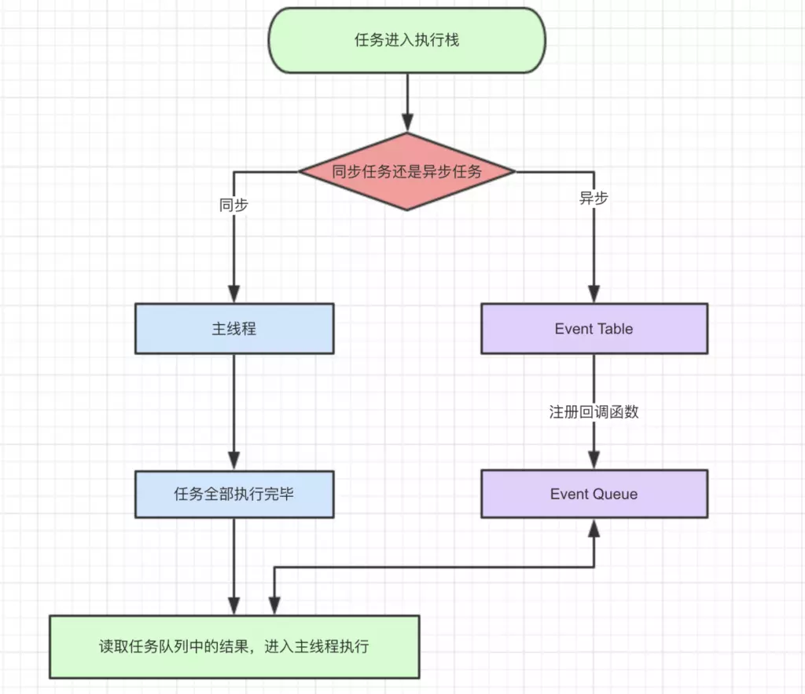

JavaScript 事件循环机制
JavaScript 事件循环机制
概念
1 | 1.JavaScript 是一门单线程的非阻塞的脚本语言 |
执行栈与事件队列
1 | 1.当JavaScript 代码执行的时候 会将不同的变量存在于内存中不同的位置 |
1 | 1.当我们调用一个方法的时候 js会生成一个与这个方法对用的执行环境 这里我们有叫做执行期上下文 这个实环境中存在着这个方法的私有作用域 上层作用域的指向 方法的参数 这个作用域中定义的变量 以及这个作用域的this对象 |
事件循环机制
1 | 1.JS的事件循环机制 分为浏览器和node 事件循环机制 两者实现技术不太一样 浏览器Event loop 是 HTML中定义的规范 node Event Loop 是由 libuv库实现 我们这里主要说浏览器的部分 |

1 | //上图注解 |
微任务和宏任务
1 | 1.在异步函数中 又可以分为 宏任务 和微任务 |
1 | 存在宏任务 和微任务的时候 浏览器 会先执行script的正常代码 如果 存在微任务 就会立即执行微任务 在执行宏任务 如果微任务里还有异步的回调 例如then 它会被当作是异步里的微任务去限制性 |
1 | console.log('script start') |
async await
1 | async 函数表示函数里面 可能会存在异步的方法 await 后面跟一个表达式 async方法执行的时候 遇到 await 表达式 会立即执行表达式 然后把表达式 后面的代码放到微任务队列里 让出执行栈 让同步代码先执行 |
1 | async function async1(){ |
1 | <script> |


公告
感谢访问本站，如喜欢请收藏。本站主要分享前端知识，立志成为资深前端工程师，但目前是一个前端界的小学生 若喜欢可以打赏请博主喝一杯冰阔落
另外请大家多多支持淼哥的开源项目
https://github.com/flipped-aurora/gin-vue-admin
🌟🌟欢迎大家start 🌟🌟
欢迎加入博主的前端技术交流群